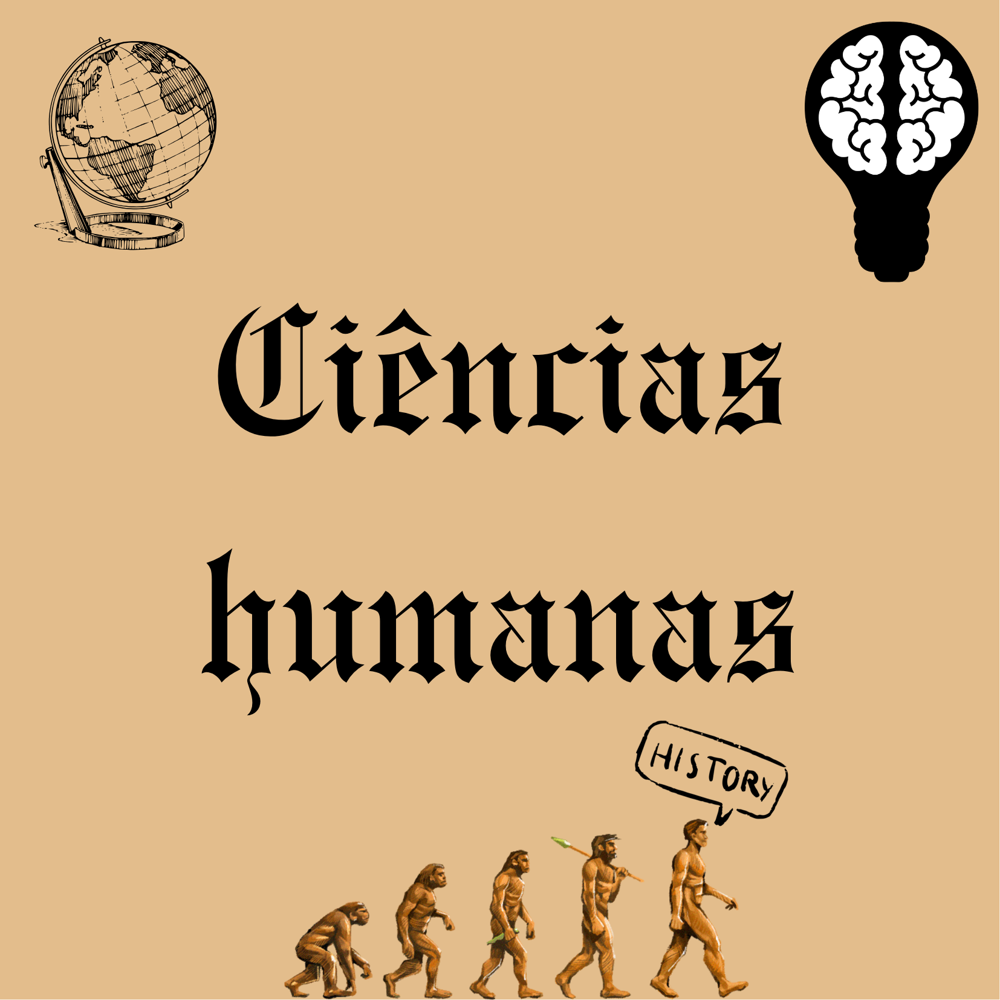
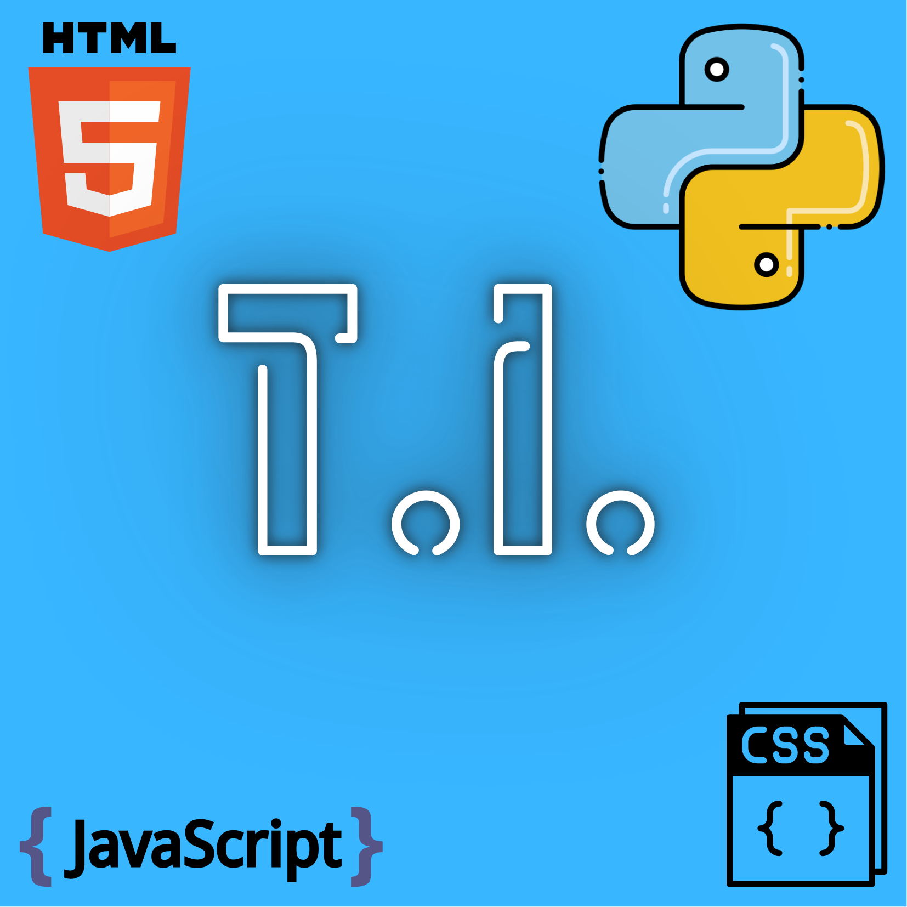
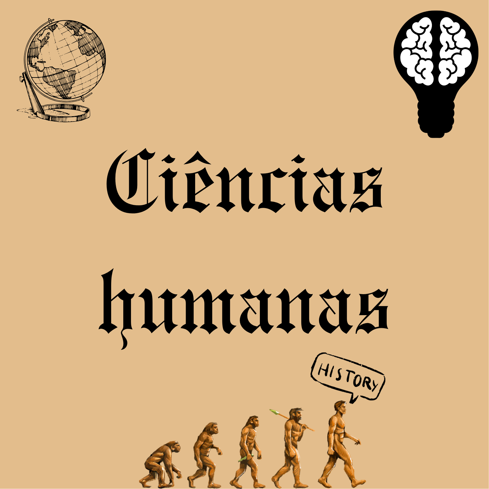
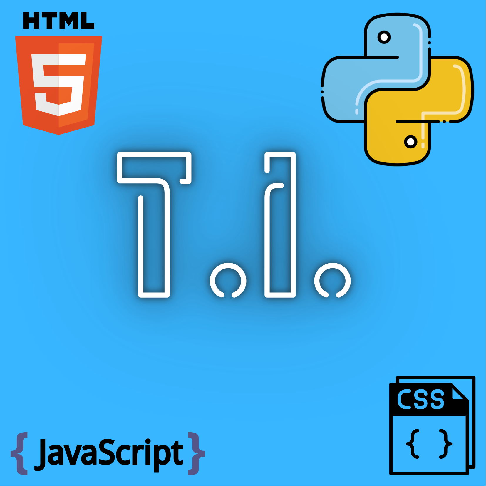

Sobre
Sou um estudante apaixonado por tecnologia e inovação, atualmente cursando o 3º ano do Ensino Médio com foco em Tecnologia da Informação. Desde cedo, demonstro grande interesse pela área de desenvolvimento web e programação, buscando constantemente aprender novas linguagens e ferramentas que possam expandir meus conhecimentos e habilidades técnicas.
No meu percurso acadêmico, tenho me dedicado ao desenvolvimento de projetos práticos que unem teoria e aplicação, como este portfólio interativo e outros trabalhos que demonstram minha evolução na programação front-end. Acredito que a tecnologia é uma ferramenta poderosa para resolver problemas e criar soluções inovadoras que impactam positivamente a sociedade.
Meu objetivo é continuar me desenvolvendo profissionalmente na área de T.I., aprofundando meus conhecimentos em desenvolvimento de software, inteligência artificial e outras tecnologias emergentes. Busco oportunidades que me permitam crescer academicamente e profissionalmente, contribuindo com minha criatividade, capacidade de aprendizado rápido e visão inovadora.

 


